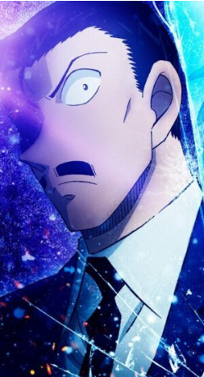
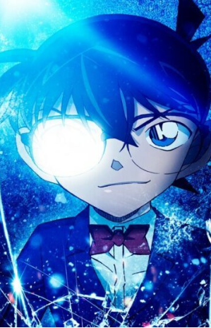

CONAN
We love conan
Sau thành công vang dội của các phần phim trước, Thám Tử Lừng Danh Conan tiếp tục gây bão với phần phim thứ 28 mang tên Conan movie 28: “Dư Ảnh Của Độc Nhãn” (Detective Conan: One-Eyed Flashback). Đây là bom tấn anime trinh thám được đầu tư kỹ lưỡng cả về hình ảnh, âm nhạc lẫn nội dung, hứa hẹn sẽ làm thỏa mãn các fan của Conan trên toàn thế giới trong năm 2025.
NỘI DUNG PHIM
Vụ án giữa tuyết trắng và âm mưu vũ trụ
Bộ phim mở đầu bằng một vụ lở tuyết bí ẩn xảy ra tại tỉnh Nagano. Trong lúc truy đuổi một kẻ tình nghi, thanh tra Kansuke Yamato bị thương và mất tích giữa núi tuyết. Khi cảnh sát tỉnh Nagano cố gắng tìm kiếm và điều tra cùng lúc đó đài quan sát vô tuyến Nobeyama – một cơ sở thuộc JAXA (Cơ quan Hàng không Vũ trụ Nhật Bản) – bị đe dọa tấn công. Conan Edogawa cùng Kogoro Mori và lực lượng cảnh sát địa phương nhanh chóng bị cuốn vào một vụ án phức tạp, liên quan đến quá khứ đẫm máu, mối thù hận chưa hóa giải và danh tính của một “độc nhãn” bí ẩn. Liệu Conan có thể phá được vụ án trước khi âm mưu khủng bố xảy ra? Sau thành công vang dội của các phần phim trước, Thám Tử Lừng Danh Conan tiếp tục gây bão với phần phim thứ 28 mang tên Conan movie 28: “Dư Ảnh Của Độc Nhãn” (Detective Conan: One-Eyed Flashback). Đây là bom tấn anime trinh thám được đầu tư kỹ lưỡng cả về hình ảnh, âm nhạc lẫn nội dung, hứa hẹn sẽ làm thỏa mãn các fan của Conan trên toàn thế giới trong năm 2025.
NHÂN VẬT NỔI BẬT
Các nhân vật đáng chú ý
Bên cạnh các nhân vật quen thuộc như Conan, Ran và Kogoro, phần phim này còn giới thiệu một số nhân vật mới, đặc biệt là các thành viên trong lực lượng cảnh sát Nagano. Thanh tra Yamato Kansuke là nhân vật được giới thiệu trong phim, với một quá khứ đầy bí ẩn và một mắt bị mù. Mối quan hệ giữa anh và các đồng nghiệp, đặc biệt là với nữ cảnh sát Uehara Yui, là một yếu tố quan trọng giúp tiến triển câu chuyện. Nhân vật Conan vẫn là điểm nhấn trong mọi vụ án. Với trí thông minh và khả năng phân tích tuyệt vời, Conan không chỉ giải mã các câu đố hóc búa mà còn đối đầu với những kẻ thù nguy hiểm. Tuy nhiên trong phần này, Conan không thể thực hiện tất cả một mình mà phải dựa vào sự hỗ trợ của các đồng đội. Điều này tạo ra một sự kết hợp hoàn hảo giữa các nhân vật, khiến cho các tình tiết trở nên hấp dẫn và lôi cuốn hơn.
Mori Kogoro
Edogawa Conan
Yamato Kansuke